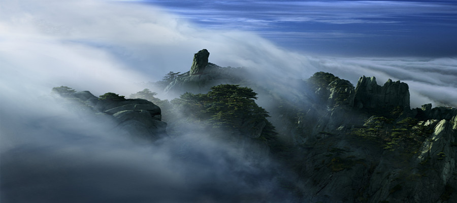
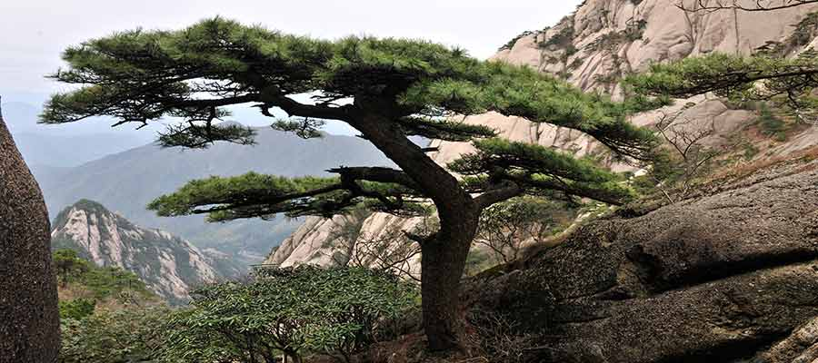
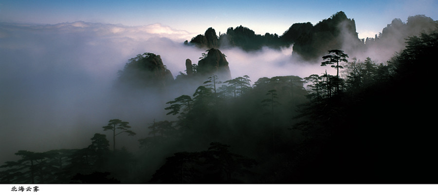
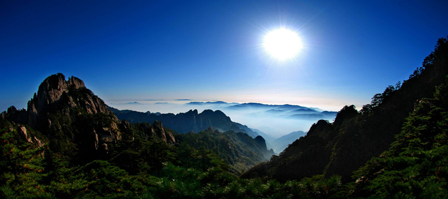

★黄山简介
黄山雄踞安徽南部，今属黄山市，横亘于黄山区、徽州区、歙县、黟县和休宁县之间，南北长约40公里，东西宽约30公里，风景区有154平方公里，号称五百里黄山。黄山风景区以秀美壮丽的怪石、奇松、温泉、云海著称，被誉为国之瑰宝、世界奇观，已成为中华民族壮丽山河的象征。
黄山古称黟山，在中国的名山中最具神秘色彩。
历史上的黄山神秘莫测，传说轩辕黄帝在这里炼丹采药，最后得道升天。故事听起来很离奇，却一直流传下来。又据说当年唐明皇听信了方士编造的这个故事后，于天宝六年( 747)将黟山改名黄山。
黄山的最观极为奇特，这主要来自地貌和气候造成的无穷变化，最有代表性的是黄山云海，神奇壮阔而变化多端，尤其是日出日落时的霞海，那种光华绚丽斑斓，令人眩目。黄山的景色，不仅春夏秋冬不同，连在一日之内也朝夕有别，甚至瞬息闯变幻莫测，引入入胜。
&..
游过黄山的人都认为，黄山最好的景色必须登上高峰或到达峡谷才能观赏
到，有云雾时最佳。登上一千八百多米的高处纵览，山中奇峰汇聚，峭壁千仞，
拔地擎天，峥嵘崔嵬。青松在悬崖上争奇，怪石在奇峰上斗艳，烟云在峰壑中弥
漫，霞彩在岩壁上流光，大自然的美在这里汇聚，在这里升华，赋予它超凡脱俗
的品质，塑造出它威武雄壮的气概。在黄山的面前，时空变得狭小，沧桑变得平
淡，它是大自然的骄子，独领天下奇山的风骚。故而当之无愧地赢得“登黄山天
下无山，观止矣”
（徐霞客语）的崇高赞誉。


